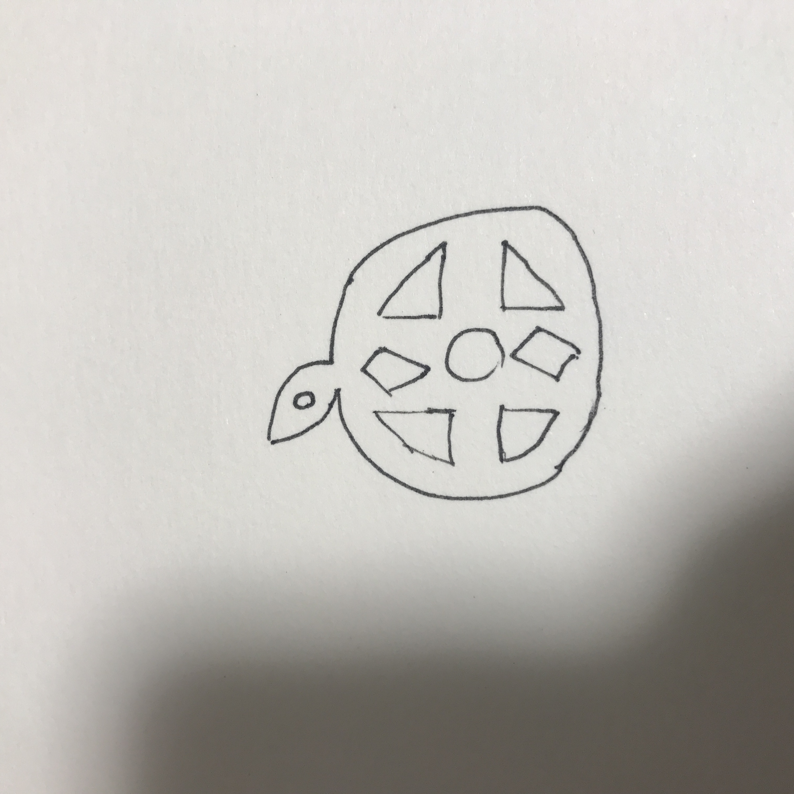
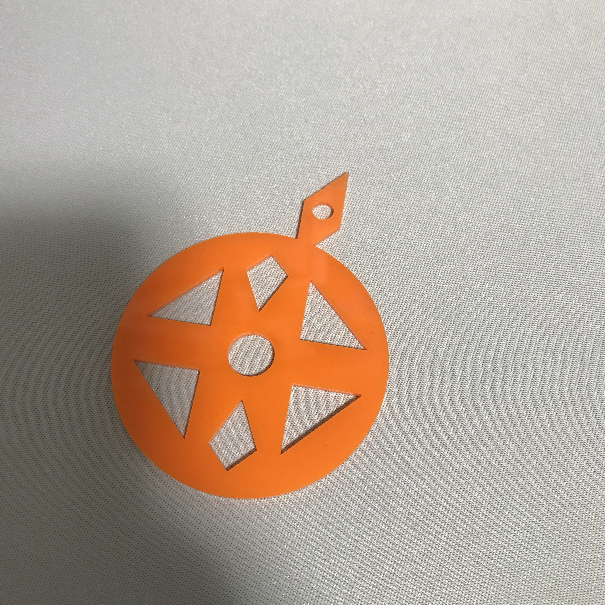

レーザーカッティング&ドキュメンテーション
テーマ「アクセサリー」
- 1. みかんネックレス
- 2. 構想段階のスケッチ画像

- 3. 実際に作った作品の画像

- 4. 設計ファイル
- 5. 作品の説明
- みかんをモチーフにしたネックレスを作りました。上のヘタの部分の小さな穴に紐を通すことでネックレスとして使うことができます。
- 6. なぜこの作品を作ろうという想いに至ったか
- 本能レベルに関するアイデア出しの際に｢甘い｣から連想されたもので｢果物｣が出てきた。また、｢かっこいい｣から連想されたもので｢アクセサリー｣が出てきた。この2つを組み合わせて自分の好きな果物のみかんのアクセサリーを作ろうと考えた。